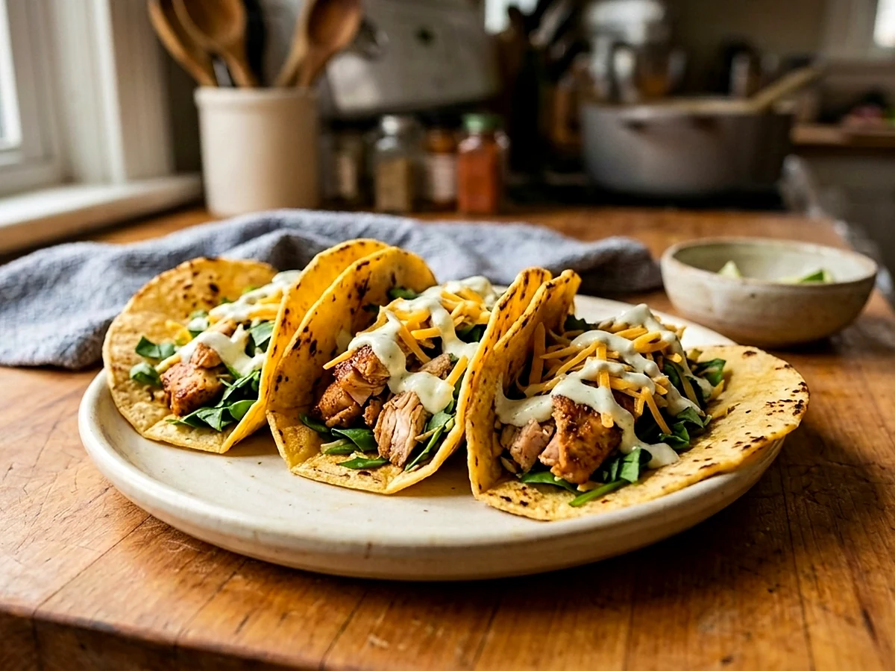

Easy Chicken Tacosfor a Family Lunch
Roasted taco-seasoned chicken thighs, warm tortillas, cheddar, spinach, and a fast Greek-yogurt lime crema.

Watch the recipe
Cook it with Jadon.
Play the video here, then keep the measured ingredient list and full method open beside you while you cook.
Open on YouTube ↗Cook in this order
Method
- Heat the oven to 400°F. Line a baking dish with foil and spread the chicken thighs in a single even layer.
- Drizzle the chicken with avocado oil and season with 2 tablespoons taco seasoning. Roast for about 20 minutes, stirring and separating the pieces halfway through.
- For the crema, stir together the Greek yogurt, remaining tablespoon taco seasoning, Tapatío, lime juice, and salt. Refrigerate until serving.
- Chop the spinach and shred the cheddar. Warm the tortillas on a large griddle or skillet for about 1 minute per side, then stack them inside a clean towel.
- Check that the chicken has reached 165°F. Fill each warm tortilla with chicken, crema, cheddar, and spinach. Serve immediately.
Food-safety checkChicken thighs must reach 165°F. Because the pieces vary in size, check one of the largest pieces before assembling the tacos.
Ready for the next one?
Browse every Jadon Cooks recipe and watch the matching video.
See all recipes